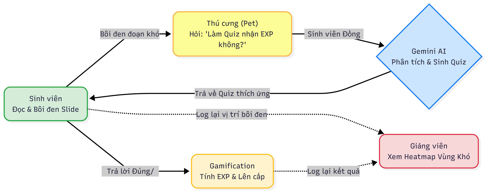

User & Job: Học Viên K4 Tự Học Bài Giảng
JTBD: "Đọc tài liệu bài giảng, bắt gặp khái niệm khó và cần xác nhận kiến thức để nắm chắc bài."
Con số thuyết phục nhất là: 28.4% (358/1.261) câu hỏi của học viên trên nền tảng chỉ là các lệnh hoàn toàn thụ động như "Giải thích đoạn bôi đen ở Trang X".
• Khảo sát (N=40): Chỉ ra 64% học viên (26/40) xác nhận họ "chỉ xem bài giảng, không tương tác gì khác" và đánh giá 3.5/5 điểm mong muốn có cơ chế ghi nhận tiến trình học (streak).
• Ý nghĩa: Hai con số này chứng minh sự thụ động nghiêm trọng khi gặp vùng kiến thức khó và khao khát có động lực học tập.
• Thiếu trích dẫn số trang (citations = []): 46.15% (582/1,261)
Vì Sao Chọn V-Pet Tutor & Adaptive Quiz Engine
6. Nhóm đã cân nhắc những ý tưởng nào? Vì sao chọn ý tưởng này?
Nhóm đã cân nhắc 3 ý tưởng: (1) Bảng xếp hạng Leaderboard: Bị loại vì khảo sát cho thấy dễ tạo áp lực tiêu cực cho người học yếu. (2) AI tóm tắt toàn bộ bài: Bị loại vì đi ngược triết lý giáo dục chủ động, làm học viên lười thêm. (3) V-Pet Tutor (Nuôi thú bằng cách giải Adaptive Quiz tại các đoạn highlight): Nhóm quyết định CHỌN V-Pet Tutor vì nó giải quyết triệt để 28.4% case lười tư duy (bắt người dùng tự suy nghĩ thay vì đưa đáp án ngay), đồng thời đáp ứng mong muốn có yếu tố đồng hành và ghi nhận nỗ lực qua điểm EXP/Streak.
| Ý tưởng cân nhắc | Đối tượng (Evidence) | Tần suất | Mỗi lần tốn gì | Quyết định & Lý do |
|---|---|---|---|---|
| (1) Leaderboard Tổng | 64% học viên (26/40) | Cao | Áp lực so sánh tiêu cực cho người học yếu | LOẠI (Áp lực tiêu cực) |
| (2) AI Tóm Tắt Toàn Bài | 28.4% - 39.02% chatlog | Rất cao | Tạo thói quen lười tư duy, học vẹt | LOẠI (Đi ngược chủ động) |
| (3) V-Pet Tutor (Adaptive Quiz) | 28.4% lười bôi đen + 39.02% thụ động | Mỗi buổi học | Mất động lực & đứt mạch tư duy | CHỌN (28.4% Lười + EXP/Streak) |
Giải Pháp & Sơ Đồ Luồng Kiến Trúc V-Pet Tutor
Lát cắt MỘT CÂU: Bôi đen tại Vùng nóng -> Adaptive Quiz -> V-Pet nhận EXP tiến hóa

[Slide 12] + V-Pet +50 EXP Gà con.
AI tự động sinh Quiz khi bôi đen tại Vùng nóng. Bôi đen quá ngắn (<2 từ) hoặc sai căn cứ -> AI từ chối sinh đề để bảo vệ độ chính xác kiến thức.
Kết Quả Đo Bằng Máy: 20/20 Test Cases Passed
Đối chiếu với Quality Bar đã chốt lúc 23:59 N1 (Quality Bar: ≥ 80% pass, cấm bịa đáp án)
•
happy_path: 5/5 | out_of_scope: 5/5 | ambiguity: 4/4•
hallucination: 3/3 | domain_risk: 3/3
.env.
User Thật Nói Gì: Phản Hồi Vòng Validation CP5
Thử nghiệm trực tiếp với ≥ 5 người dùng ngoài nhóm (Willing users Khóa 3 & Khóa 4)
— Trịnh Bá Khánh Trình (Học viên Khóa 3)
— Nguyễn Tuấn Vũ (Học viên Khóa 4)
- Thêm nút "Bỏ qua thử thách" (HAX G8): Cho phép học viên bypass bài quiz nếu thực sự muốn hỏi thẳng AI Tutor.
- Chống Spam EXP (Domain Risk): Khóa thử thách 1 phút nếu học viên cố tình click lụi đáp án quá 3 lần.
Nếu Có Thêm 1 Tuần: Backlog & Bài Học Rút Ra
Ưu tiên 3 việc dựa trên feedback & failure thực tế
validate_understanding) từ 0.08% lên ≥ 20%.
🎓 BÀI HỌC LỚN NHẤT CỦA NHÓM (LESSON LEARNED)
"Đừng đoán nhu cầu người dùng bằng cảm tính hay xây UI hoành tráng từ đầu; hãy bắt đầu bằng mining chatlog thật, chốt Quality Bar khắt khe và lắng nghe feedback nguyên văn từ những học viên thật."